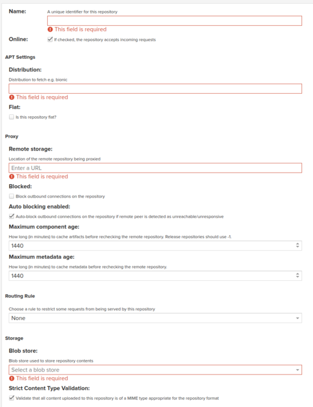

APT repository mirrors are easy to configure.
Here we will create a repository for the default Debian repository located at
http://deb.debian.org/debian
Create blob store
You only need to do this once per group of repositories.
So for Debian then create a blob store called debian,
for Ubuntu then create ubuntu etc.
Then for each mirror you create then reuse the same blob store for each group.
-
Log in to Nexus and go to the admin page via the icon in
the top nav bar.
-
Select blob store, then Create blob store
-
Under Type select File
-
Under Name enter
debian
-
Select Create blob store to create it.
Create mirror
-
Log in to Nexus and go to the admin page via the icon in
the top nav bar.
-
Select Repositories then the Create
Repository
-
Select
apt (proxy) as the repository type.
-
Now fill in the required fields.
Here we will use Debian as an example:
-
For name enter
apt-debian
-
For Distribution
buster
- note this isn't as important as you might think but it is required
-
For Remote storage enter the repository url
http://deb.debian.org/debian
-
For Blob store select the one you created earlier,
debian if you are following my naming conventions.
-
Once it's all filled in select Save and the Repositories list should now show
it.
With the Debian example you should also create a mirror of the debian security repository at the
same time:
| Field |
Value |
| Name | apt-debian-security |
| Distribution | bionic |
| Remote Storage | http://security.debian.org/debian-security |
| Blob store | debian |
